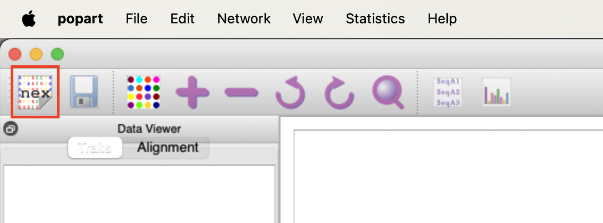
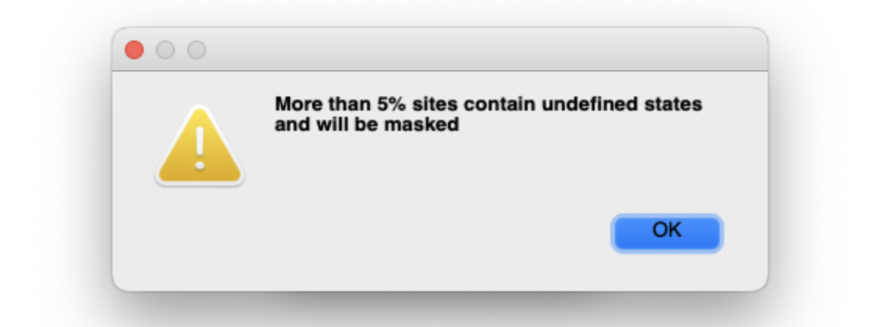
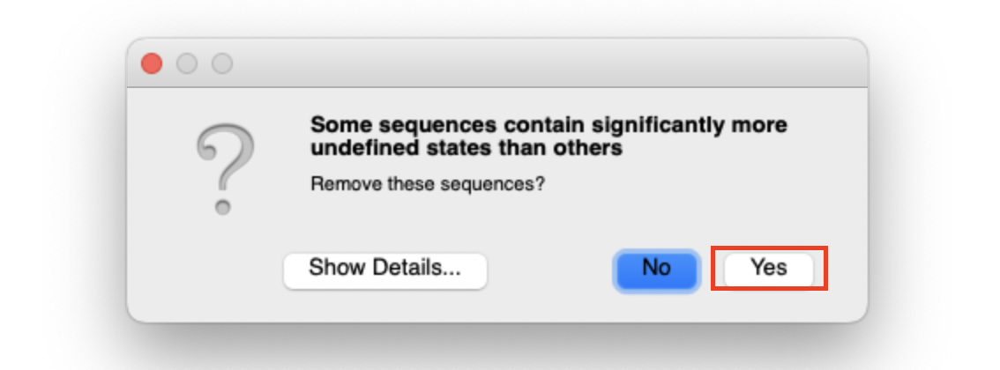
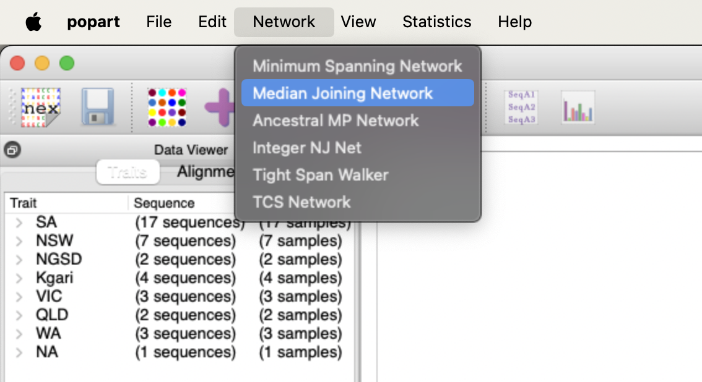
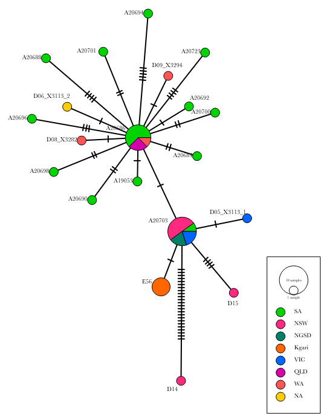

BIOINF 3000 / BIOTECH 7005: Bioinformatics and Systems Modelling
Week 10: Ancient DNA Practical
Introduction
In this practical, we are going to use unique aspects of ancient DNA (aDNA) sequencing data (fragmentation, damage, contamination) to understand the impact of laboratory procedures (type of library, damage repair) on damage patterns.
The data is real data from my group, and they have been generated by extracting aDNA from dingoes skeletal samples from around Australia (Souilmi et al. 2024). The dataset we will use in this practical includes an additional set of modern dingoes from (Zhang et al. 2020). The data represents modern and ancient dingo genetic diversity, New Guinea singing dogs, and a modern village dog from Bali (Figure 1).
After aDNA extraction, we built several types of sequencing libraries and damage repair, (which we will explore later). For a subset of the samples, we then performed in-solution enrichment of mitochondrial genome sequences using predesigned oligonucleotides as molecular ‘baits’. The libraries enriched for mitochondrial DNA fragments were then sent to a sequencing service provider.
You now have access to fastq files generated by Illumina machines. The samples were sequenced in 2 x 150 sequencing—i.e. the machine will sequence 100 nucleotides from the start of the DNA molecules, and 100 nucleotides from the end of the same molecules (Figure 2).
0. Referesher on Loops in Bash
A for loop is a structure that allows you to repeat a set of commands for each item in a list. The syntax is as follows:
for item in list; do
# do things to the item
done Example:
Lets do some setting up first…
mkdir -p ~/Prac10/loops
cd ~/Prac10/loops
# First lets create the files
for i in $(seq 1 20) ; do
echo $i > file${i}.txt
done
lsSay we have 3 files file1.txt, file2.txt and file3.txt. We can print the files as:
for i in file1.txt file2.txt file3.txt ; do
echo $i
done
# lets print the name of the file without .txt
for i in file1.txt file2.txt file3.txt ; do
basename $i .txt
done
# can use *.txt instead of typing all files
for i in *txt ; do
basename $i .txt
done
# lets rename all the files from file1.txt to file1_newer_and_cooler.txt
for i in *txt ; do
name=$(basename $i .txt)
new_name="${name}_newer_and_cooler.txt"
mv ${i} ${new_name}
done
lsIn this prac, we will be using for loops to run the same command on multiple files/samples.
1. Data preparation
Below we describe some of the basic steps to process high throughput sequencing data in ancient DNA research. These steps were covered in Week 6 of this course under ‘Alignment/NGS’. See below for a refresher and also learn about the extra steps needed to handle ancient DNA sequence data.
Setting up
Set up working directories, input data and software environment.
# make the required directories
mkdir -p ~/Prac10/{rmdups,mapdamage,trim_bam,fasta,msa}
# Change directory into Prac10
cd ~/Prac10/
# Copy the input data
cp -r ~/data/ancient_dna/data.tar.gz ~/Prac10/
# Uncompress the data for the prac
tar -xvf data.tar.gz
# make some space
rm data.tar.gz
# Activate the software environment
conda activate adna1.1. The raw sequencing data
The raw sequencing data are called “reads”, and they are in a FASTQ format. More information about this particular data format can be found at https://en.wikipedia.org/wiki/FASTQ_format.
Briefly, the FASTQ format uses four lines per sequence:
- Line 1 always begins with @. It contains a sequence identifier generated by the sequencing machine and a description (optional).
- Line 2 is the raw sequence (or “read”).
- Line 3 always begins with +. It usually does not contain any other information.
- Line 4 encodes the quality scores for the sequence in Line 2.
An example of your raw FASTQ data looks like:
@HWI-ST1359:56:C4EE8ACXX:6:1101:8215:1988 1:N:0:CCGGTAC
TAGCTAATTGAGATGGAAGAGCACACGTCTGAACTCCAGTCACCCGGTACATCTCGTATGCCGTCTTCTGCTTGAAAAAAAAAACAAAAACAACACAACAC
+
CCCFFFFFHHHHHJJJJJJJJJJJJJJJJJJJJJJIJJJGHHIJJJIHHIHHJJJJJIJJJJGHFFFFECECECCCCDDD#####################
@HWI-ST1359:56:C4EE8ACXX:6:1101:8082:1996 1:N:0:CCGGTAC
GTGGATCCTATCGGTTCTCGACTCGCTTCAGATCTACTTTGAATCTACTTTAGATCTATCGTAACGACTTAACTCGGAGATCGGAAGAGCACACGTCTGAA
+
CCCFFFFFHHHHHJJJJJJJJJJJJJIIIIJJJJJJJJJJIJJJJJJJJJJIIJJJJJJJJJIIIHHHFFFFEEDDDDDDDCDDDBDDBDDDDDDDDDDDA
@HWI-ST1359:56:C4EE8ACXX:6:1101:8352:1972 1:N:0:CCGGTAC
NTCTCCGATGCGTATCCAATGGGGAATCATCATACTACCACACGATGCACATATGAGATAGATGAGATCGGAAGCACACGTCTGAACTCCAGTCACCCGGT
+
#4=DFFFFHHHHFHJJJJJJJJJJJJIIJJJJJJJJJJJJJIJJJJJJIJJIJJJJJJJJJHHFGEHEFEFDDDDACCABABDDDDDDDD@@ACCDDDDD0
@HWI-ST1359:56:C4EE8ACXX:6:1101:8415:1994 1:N:0:CCGGTAC
ATACGGTCATCGGGCGATCAGCTAGTCCTTTCTCGTTCGACTTTCGTACAGATGAGATCGGAAGAGCACACGTCTGAACTCCAGTCACCCGGTACATCTCG
+
CCCFFFDFHHHHHIIJJIJJJJIJJFHJIJJJJJGHJHIIJJJJJIHHIHHHGHFFFFEFDDDDD@DCDDDBBDDBCCDDDDDDDDCDCDB559BCBACDA
1.2. Quality control of Sequenced Reads
The first thing you do when you receive sequencing data is perform a quality control. The programs fastp (Chen et al. 2018) and fastqc (Andrews et al. 2012) are very easy to use and produces html reports that can be visualised in any internet browser. We have already run fastp for all the same. Let’s look at the html reports for samples D01_W0235 and A19053. The data can be found in data/fastp/
Q1: What can you say about the difference in read-length?
Q2: What about the duplication rate? What can you conclude from that?
1.3. Read collapsing
Ancient DNA molecules are typically less than 100 bp in length, meaning the 150 bases long reads may include some of the barcode and/or sequencing adapter sequences (Figure 2). It is therefore necessary to trim the barcode/adapter sequences from the data in order to only analyse the inserts.
Typically, more than 95% of the read pairs (Read 1 and Read 2) can be collapsed in ancient DNA datasets because the short insert DNA end up being sequencing twice, during Read 1 and Reads 2.
A program has been developed for ancient DNA, where the barcode/adapter sequences are trimmed, and the overlapping reads are merged together (or collapsed). The program is AdapterRemoval (Lindgreen 2012).
We have also run this already in order to save time and get to the exciting parts of ancient DNA analysis. AdapterRemoval produces metrics that we can use MultiQC to summarise.
MultiQC (Ewels et al. 2016) is a very useful tool that can combine quality-control reports from multiple samples.
## Activate the bioinf environment. It has MultiQC
conda activate bioinf
cd ~/Prac10/data/adapterremoval/
# combine the reports using multiqc
multiqc .open the multiqc_report.html.
Q3: What do you notice from the report?
Q4: What can you say about the ratio of collapsed reads?
Q5: What can you learn from the read-length?
2. Read Alignment
Now we will align the sequencing reads to the dog mitochondrial reference genome. We download the reference genome from ENSEMBL database (Birney and Team 2003), a genomic database containing severla useful resources. For convenience, you can find the reference indexed inside data/reference.
2.1. Alignment
We use bwa aln alignment (Li and Durbin 2009) according to the parameters in Oliva et al. (2021). These parameters have been tuned to deliver optimal performance for aDNA samples. Again to save time, we have aligned the samples for you already (it is similar to alignment in Week 6). Additionally, these reads have been sorted using samtools (Li et al. 2009).
3. Removing Duplicate reads
When sequencing libraries are built from extracted DNA, PCR amplification is often used to increase the amount of DNA available for sequencing. This is especially critical in ancient DNA (aDNA) studies, where the DNA of interest is highly degraded and present in very low amounts. However, PCR amplification can introduce an issue: the same DNA fragment may be copied and sequenced multiple times.
These duplicate sequences artificially inflate the representation of certain alleles or regions, skewing downstream analyses. For instance, if the same fragment is sequenced multiple times, it might appear that a particular allele is more common than it actually is. To avoid this bias, it is standard practice to detect and mark duplicated sequences in the data.
Duplicate marking works by identifying reads that map to the exact same location in the genome, meaning they have the same start coordinate. Since the sequencing process is random, it is highly unlikely for independent reads to start at the exact same position unless they originate from the same DNA molecule. Therefore, reads that share the same start point are flagged as duplicates and can be removed from further analysis to ensure more accurate results.
3.1 MarkDuplicates
We will use a tool called MarkDuplicates (Broad Institute, n.d.) which is part of the Picard suite of tools. Picard is a toolkit to manipulate mapped sequence data.
# Lets reactivate adna environment
conda activate adna
cd ~/Prac10/rmdups/
for bam in ../data/alignment/*bam; do
sn=$(basename $bam .bam)
picard MarkDuplicates INPUT=$bam \
OUTPUT=${sn}_rmdup.bam REMOVE_DUPLICATES=TRUE \
AS=TRUE METRICS_FILE="${sn}_rmdup.metrics" \
VALIDATION_STRINGENCY=SILENT
samtools index ${sn}_rmdup.bam
done4. Read damage
We are interested in the characteristic post-mortem damage that can be detected in ancient DNA is the deamination of C into U, which will be amplified and sequenced as T. Deamination of C occurs primarily at the extremities of ancient DNA molecules, and the resulting 5’ C-to-T substitutions (and complementary 3’ G-to-A substitutions) can be summarised using the program mapDamage (Figure 3).
We will use the mapDamage package (Jónsson et al. 2013) to capture the misincorporation rate and location in within the reads.

Lets run mapdamage on a few samples and check the results.
cd ~/Prac10/mapdamage/
ref="~/Prac10/data/reference/dog_mtDNA.fasta"
for bam in ../rmdups{D10,D11,D12,D13,Y47,BaliVD}_*rmdup.bam; do
mapDamage -i $bam -r $ref --no-stats
done- Q6: What samples do you think are ancient?
- Q7: What do you notice about the fragment length of the ancient and modern samples?
5. Trimming the damaged reads
To mitigate the impact of DNA damage, it’s necessary to trim the damaged bases from the ends of reads before further processing. This ensures that ancient damage does not falsely influence variant calling or other analyses.
In this practical session, for the sake of simplicity and uniformity, we will trim two bases from both the 5’ and 3’ ends of every read, regardless of whether the sample is modern or ancient. However, in real-world scenarios, this step is typically only applied to aDNA samples where damage is observed, and the extent of trimming is determined by the damage patterns seen in MapDamage results.
We will be using a tool called trimBam from BamUtil (Jun et al. 2015)
- Q8: Based on the mapDamage plot how many bases should we trim?
cd ~/Prac10/trim_bam
for bam in ../rmdups/*rmdup.bam; do
bam trimBam $bam tmp.bam -L 2 -R 2
samtools sort tmp.bam -o $(basename $bam _rmdup.bam).trimmed.bam
samtools index $(basename $bam _rmdup.bam).trimmed.bam
done6. Understanding Population Structure using the mitochondrial DNA
Mitochondrial DNA (mtDNA) is a uniparental marker that is maternally inherited (Figure 4). It is a valuable marker to understand population history of a species. The maternal inheritance preserves a direct lineage of maternal ancestry. mtDNA are small molecules that are found in high copy number within cells, this increases its chances of surviving in ancient samples, making it easier to reconstruct compared to nuclear DNA. They also do not recombine and so the entire mtDNA is inherited as a single unit. Its relatively high mutation rate provides sufficient variability to distinguish between populations, track evolutionary changes, and infer migration patterns across generations. These characteristics make mtDNA a powerful marker for reconstructing ancient population dynamics.
6.1 Create a concesus MT Genome
First, lets reconstruct the mitochondrial genome of our samples. We will use the consensus function from samtools. We will use the alignmet file as input and get the entire mitochondrial genomes as a FASTA file. See doc to understand what all the options in the command below does.
cd ~/Prac10/fasta
for bam in ../trim_bam/*.trimmed.bam; do
sn=$(basename $bam .trimmed.bam)
samtools consensus -r chrM \
-o ${sn}_consensus.fasta -a \
--min-MQ 25 --min-BQ 30 -c 0.75 \
-d 2 ${bam}
sed -i 's/chrM/'$sn'/' ${sn}_consensus.fasta
doneMerge all the genomes into a single FASTA file.
cd ~/Prac10/fasta
for fasta in *consensus.fasta ; do
cat $fasta
done > concatinated.fasta6.2 Perform Multiple Sequence Alignment
We then want to compare how the mitochondrial genomes across our samples compare to each other. For this we will use the tool MUSCLE (Edgar 2004) that can perform multiple sequence alignment (MSA).
# MUSCLE Multiple Alignment
muscle -in concatinated.fasta -out aligned.fasta 6.3 Convert MSA to Nexus
Finally, we will convert the MSA to Nexus format to make it compatable for tools to visualise the multiple alignment. Nexus is a useful format that can store information about the alignment as well as metadata about the samples such as geographical origin. We will use seqmagick (Yu 2024) for this.
# seqmagick conversion
seqmagick convert --alphabet dna aligned.fasta aligned.nex6.4 Visualise Structure in PopART
Before, visualising the multiple alignment we need to add metadata about our samples to the Nexus file.
cat aligned.nex ~/Prac10/data/traits.nex > aligned_traits.nexWe can use PopART (Population Analysis with Reticulate Trees) (Leigh and Bryant 2015) to create a median-joining network (Bandelt, Forster, and Röhl 1999). This is a tool to visualise the differences in mitochondrial sequences. It clusters similar sequences together and calculates the number of differences between dissimilar sequences.
Unfortunately, PopART does not have a command line tool. You will have to run PopART on your local computer. It is free to use and can be downloaded from here.
Once you’ve installed PopART, follow the instructions below.
   
We should be able to create something like this. 
- Q9: What can you infer about the population structure of Dingoes?